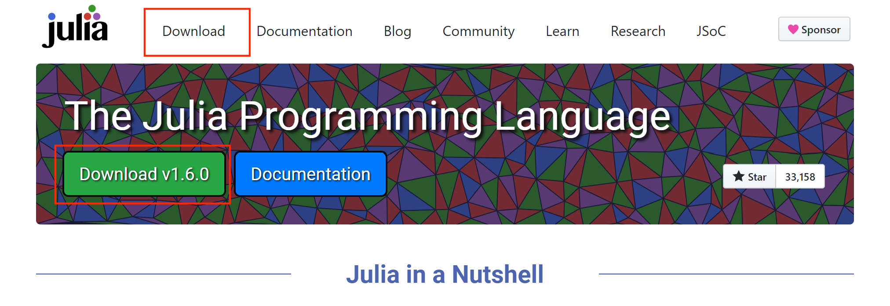
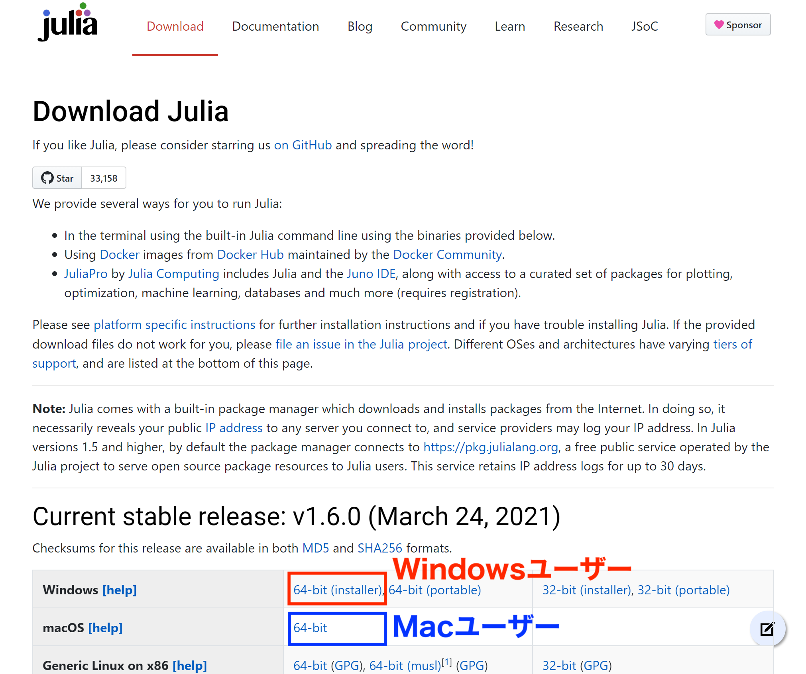
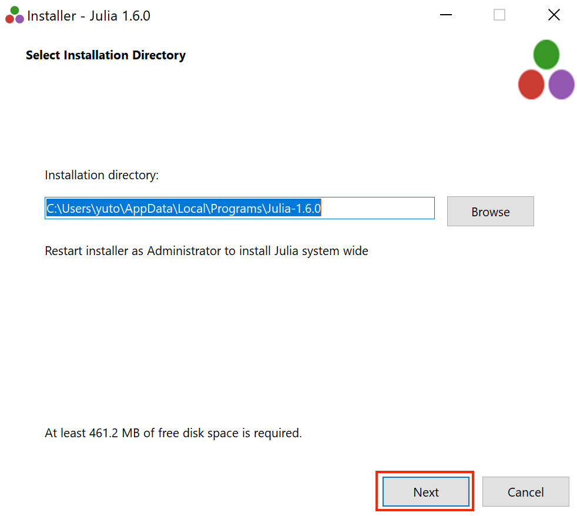
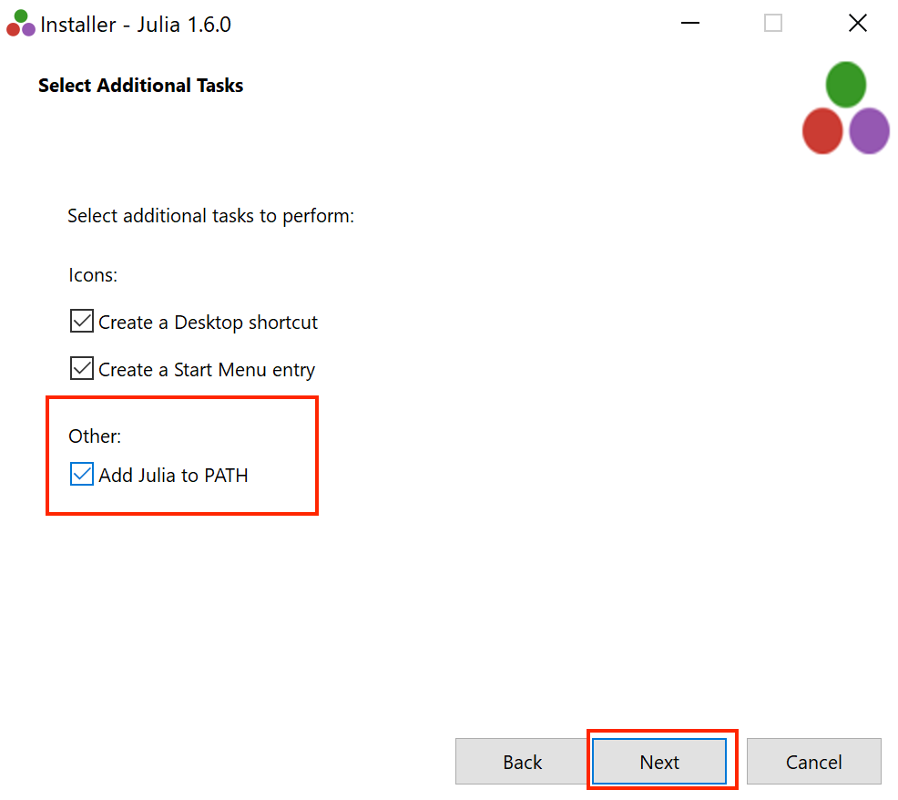
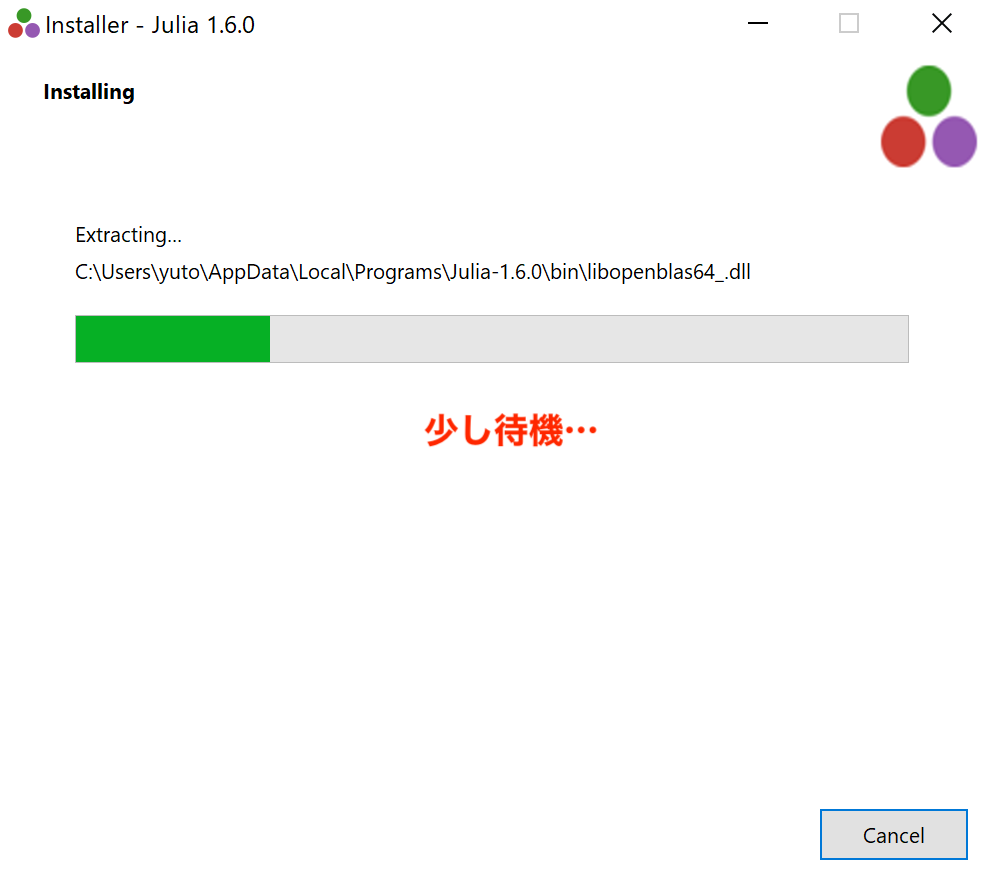
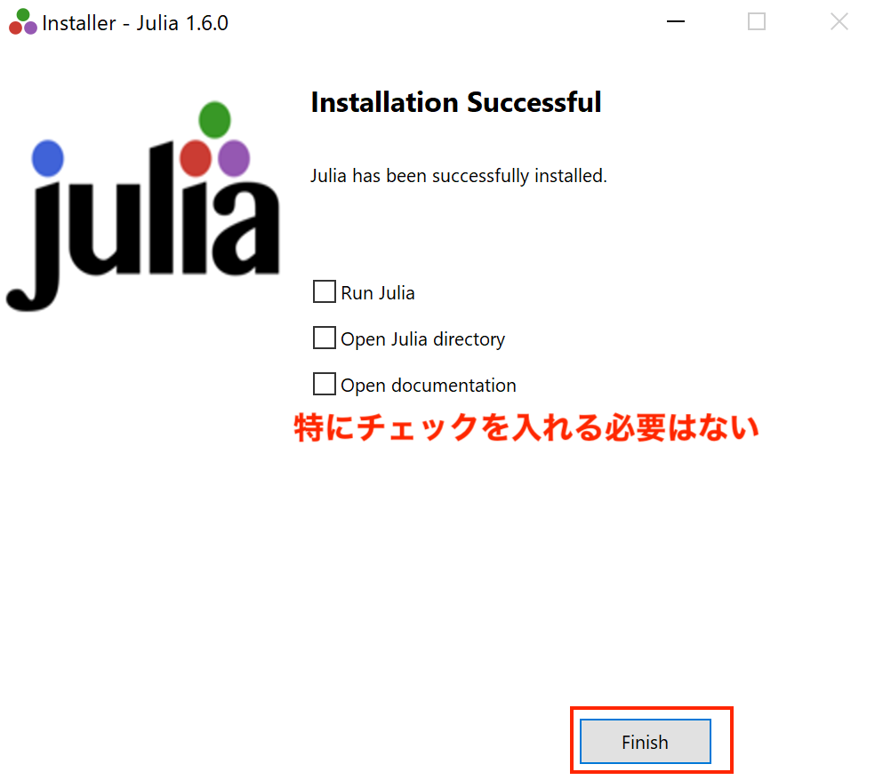
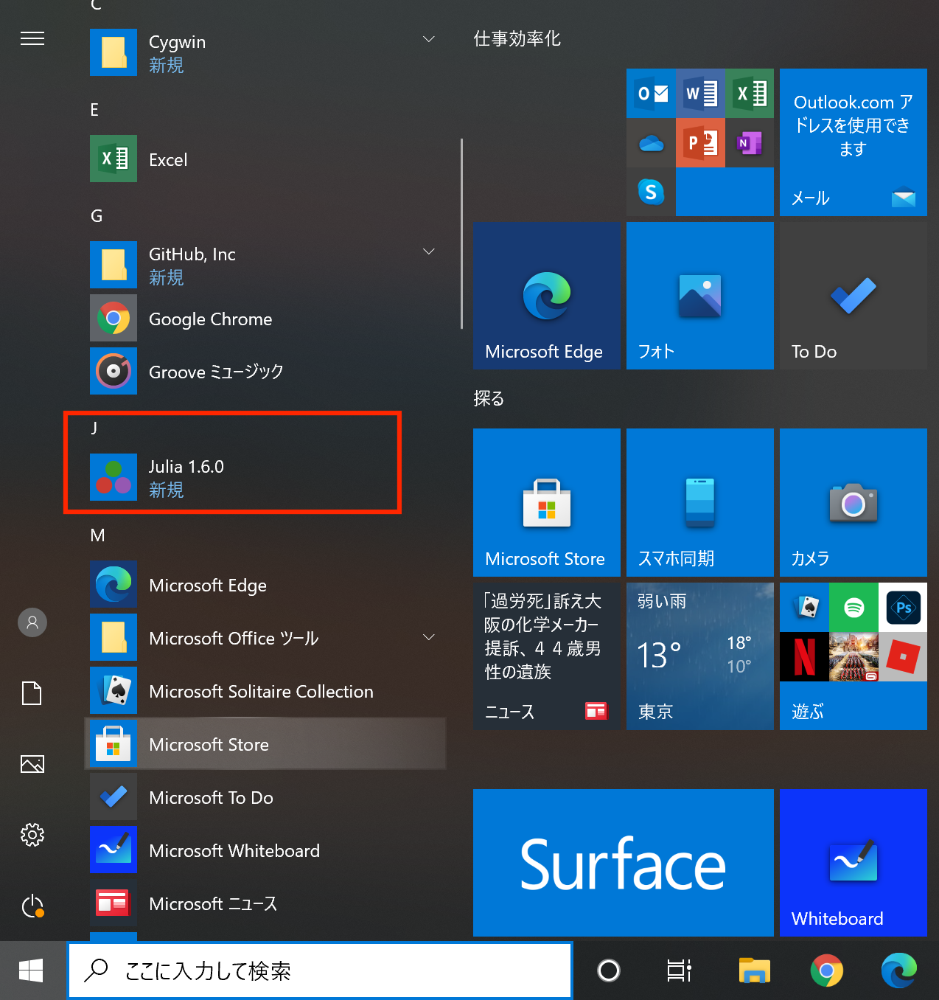
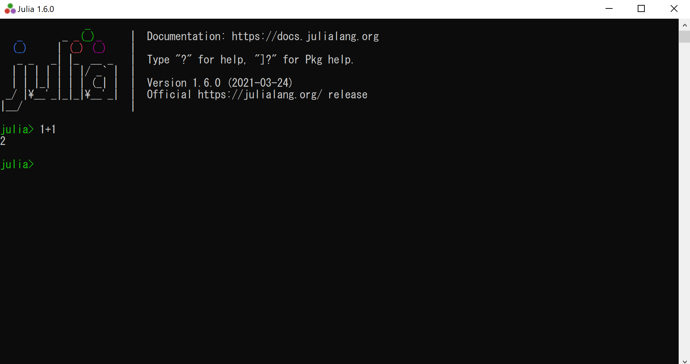
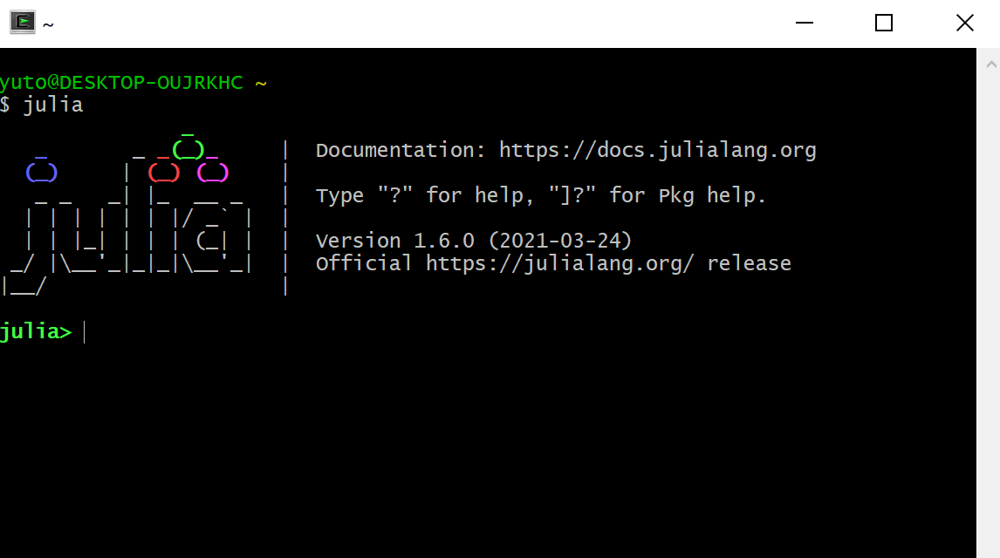

juliaの環境構築について
Julia本体のインストールと，JupyterLabのインストールについて説明します．
情報教育端末を使う場合
未確認...
windowsを使う場合
インストーラーを使うのが簡単です
- Julia の webページ にアクセスして，Download または Download v.1.6.0 （この数字はアクセスした日によって違うかもしれません） をクリックします．
 - 64-bit (installer) をクリックしてインストーラーをダウンロードし，ダウンロードしたファイルを実行します．
 - あとは，順に進んでいけばよいですが，Select Additional Tasks では Add Julia to PATH にチェックを入れておくとよいでしょう．
    - このような感じでインストールされているはずです．
 - クリックすると...（1+1などを計算させてみるとよいでしょう）

なお，cygwin や コマンドプロンプト でも julia (+エンターキー) とすれば，juliaが起動します．例えばcygwinの場合は次のような感じです．

macを使う場合
Julia本体のインストール
homebrewなどのパッケージ管理システムを使う場合
homebrew をすでに使っている場合は，ターミナル上で
$ brew install cask julia
とすればインストールできます．homebrew をインストールするには，homebrewのwebページ にアクセスし，「インストール」の下のおまじないのような一行をコピーし（ただし，左端の「$」は除く），macOSのターミナルにペーストしエンターキーを押してください．
MacPorts などの他のパッケージ管理システムを利用している場合も，同様にインストールできるはずです（宮武は homebrew を使っているため未確認）．
インストーラーを使う場合
Julia を配布している Download Julia から，macOS 向けの最新の installer をダウンロードしましょう（Current stable releaseから macOS の 64-bit をクリックすれば自動でダウンロードが始まります）．ダウンロードできたら，そのファイルを使って他のアプリケーション同様にインストールすれば完了です．
ターミナルから
$ julia
で Julia を起動するためには，Platform Specific Instructions for Official Binaries にあるコマンドをターミナル上で入力してください．
ターミナルから
$ julia
で Julia を起動すると，次のような画面が表示されます（表示されれば成功です）．Version 1.5.3 (2020-11-09) の部分は，いつどのようにJuliaをインストールしたかによって異なるのであまり気にする必要はないでしょう．
_
_ _ _(_)_ | Documentation: https://docs.julialang.org
(_) | (_) (_) |
_ _ _| |_ __ _ | Type "?" for help, "]?" for Pkg help.
| | | | | | |/ _` | |
| | |_| | | | (_| | | Version 1.5.3 (2020-11-09)
_/ |\__'_|_|_|\__'_| | Official https://julialang.org/ release
|__/ |
julia>